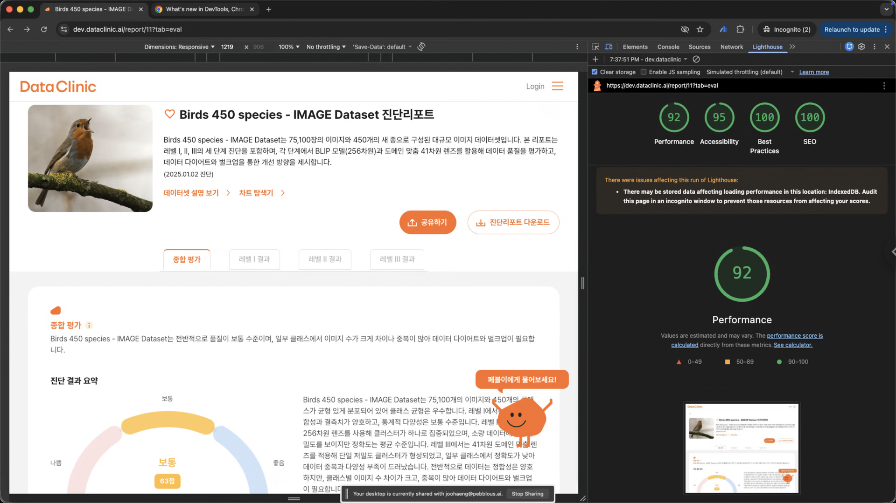

Executive Summary
The Pebblous DataClinic web app had a Lighthouse Performance score of 39, with SEO completely unmeasurable. Outsourcing the fix would require 2-3 specialists over 3-4 weeks at roughly $14,000. By collaborating with Claude Code, the entire overhaul was completed in just 2 days for approximately $391 in API costs.
The strategy had four pillars: converting a 28,000px monolithic page to a tab-view architecture (reducing render volume to 1/4), building an SEO metadata infrastructure from zero to achieve a perfect 100, applying precision Skeleton UI to cut CLS from 0.661 to 0.021 (97% reduction), and improving Accessibility from 83 to 95.
This article is a practical record of the explosive leverage that agentic AI provides in real-world engineering. The key enabler was the ability to run code-change → build → measure → analyze cycles in minutes rather than hours. The final cost ratio: AI 1 to Human 35 — a 97% cost reduction.
1. Introduction
Web performance is a critical metric that directly impacts user experience and search rankings. Google's Lighthouse measures webpage quality across four axes — Performance, Accessibility, Best Practices, and SEO — and has become the de facto industry standard. Improving these scores requires touching a wide range of areas: frontend architecture, metadata, accessibility, and image optimization.
I'm the CEO of Pebblous, an AI data company. As a startup that needs to maximize output with minimal headcount, I personally write code and develop DataClinic, a data analysis report web application.
The problem was the report detail page (/report/[id]): Lighthouse Performance at 39, SEO completely unmeasurable. Outsourcing would cost $14,000 and take a month; doing it myself would take weeks. But through collaboration with Claude Code, we completed it in just 2 days, for about $391 in API costs. Here's the full record.
2. Before & After: Results at a Glance
The two-day effort broke into two distinct phases. Day one focused on tab-view architecture conversion and SEO infrastructure, achieving Performance 87 and SEO 100. Day two applied precision CLS Skeleton placeholders, pushing Performance to 92 and Best Practices to a perfect score.
| Category | Before (3/7) | Mid (3/8 AM) | Final (3/8 PM) | Change |
|---|---|---|---|---|
| Performance | 39 | 87 | 92 | +53 |
| Accessibility | 83 | 95 | 95 | +12 |
| Best Practices | 92 | 96 | 100 | +8 |
| SEO | N/A | 100 | 100 | N/A → 100 |
The reason SEO was initially N/A is interesting: the report page's DOM exceeded 28,000px, causing Lighthouse's SEO gatherer (AnchorElements) to time out entirely. When a page is too large, you don't just get a low score — measurement becomes impossible.

3. Core Web Vitals: The Numbers Behind Perceived Speed
Behind the Lighthouse scores are Core Web Vitals — the metrics that determine actual user-perceived speed. The table below shows the improvement for each metric.
| Metric | Before | Mid | Final | Improvement |
|---|---|---|---|---|
| CLS Cumulative Layout Shift |
0.661 | 0.19 | 0.021 | 97% reduction |
| LCP Largest Contentful Paint |
4.7s | 1.3s | 1.8s | 62% reduction |
| Speed Index | 11.5s | 0.9s | 0.9s | 92% reduction |
| TBT Total Blocking Time |
200ms | 0ms | 0ms | 100% eliminated |
| TTI Time to Interactive |
4.8s | 1.3s | 1.8s | 63% reduction |
| FCP First Contentful Paint |
0.4s | 0.6s | 0.7s | Slight increase |
The most dramatic improvement was CLS — from 0.661 ("poor") to 0.021 ("good"), a 97% reduction. Google's "good" threshold is below 0.1; our result is 1/5 of that threshold. LCP dropped from 4.7s to 1.8s, and Speed Index from 11.5s to 0.9s. The perceived speed improvement was transformative.
FCP increased slightly because the tab-view transition changed the initial render structure. However, 0.7s is still well within the "good" threshold (under 1.8s), and the impact on overall user experience is negligible.
4. What We Did: Four Key Initiatives
4.1 Architecture Shift — From Simultaneous Rendering to Tab View
This was the highest-impact change. The original structure rendered all four sections (Evaluation, Level 1, Level 2, Level 3) simultaneously on a single page, creating a massive 28,000px+ document. After the change, only the selected tab's section renders — reducing render volume to approximately 1/4.
The URL design was kept flexible: tab view as default (/report/[id]), with the legacy list view preserved via query parameter (/report/[id]?view=list) for backward compatibility. This single change alone delivered LCP 62% reduction, Speed Index 92% reduction, and TBT 100% elimination.
62%
92%
100%
4.2 SEO Metadata Infrastructure — From N/A to 100
From a state where SEO couldn't even be measured to achieving a perfect score, we built a systematic metadata infrastructure. We implemented dynamic title, description, canonical URL, and alternates (ko/en) generation via generateMetadata, and applied JSON-LD structured data (TechArticle, BreadcrumbList, FAQPage schemas).
OpenGraph and Twitter Card meta tags optimized social sharing. We removed the noindex meta tag to allow crawler access and built a dynamic OG image generation system (ImageResponse 1200x630). All 7 SEO-related Lighthouse audit items passed: is-crawlable, canonical, image-alt, document-title, meta-description, hreflang, and robots-txt.
4.3 CLS Improvement — Introducing Skeleton UI
A CLS of 0.661 is rated "poor" — it means the layout was shifting significantly during page load. That jarring experience where the text you're reading suddenly jumps? That's CLS.
In phase one, we applied Skeleton UI to each component (Evaluation, Level1, Level2, Level3) and eliminated simultaneous rendering via tab-view, reducing CLS to 0.19. We didn't stop there — phase two applied precision Skeleton placeholders to the hero area, achieving a final CLS of 0.021. The "good" threshold is below 0.1; our result is 1/5 of that. This improvement was the key driver in pushing Performance from 87 to 92.
4.4 Accessibility & Other Improvements
These are the changes that lifted Accessibility from 83 to 95. We added aria-label attributes to buttons so screen readers could announce their purpose, added meaningful alt attributes to images, and gave links accessible names.
Additionally, we fixed a /api/json 404 error (moved the API route outside the locale path), and applied object-fit: contain to images to fix aspect ratio distortion. These incremental improvements added up to a perfect Best Practices score of 100.
5. Project Scale: 36 Commits, 139 Files
All of this was accomplished in two days. The numbers reveal the density of the work. Notably, 2,254 lines added and 297 lines deleted across 78 source code files indicates architecture-level refactoring, not simple patches.
| Item | Count |
|---|---|
| Total commits | 36 |
| Files changed | 139+ |
| Source code changes | 78 files, +2,254 / -297 lines |
| Documentation | 50+ files, +1,800+ lines |
| Lighthouse measurement data | 25 JSON files |
| Custom skill scripts | 4 files, +1,089 lines |
6. Working with Claude Code
Claude Code is Anthropic's CLI-based AI coding agent. Our collaboration followed a Diagnose → Plan → Execute → Measure cycle.
1. Lighthouse JSON Analysis
Feed Lighthouse JSON results to Claude Code, which prioritizes items needing improvement
2. Improvement Planning
Propose specific solutions at the code level for each item
3. Code Implementation
Immediately implement solutions — new components, refactoring existing code, adding metadata
4. Re-measurement & Verification
Run Lighthouse again to confirm improvement
The key was being able to repeat this cycle dozens of times in a single day. What would take a solo developer hours per cycle was compressed to minutes. We also leveraged Claude Code's custom skill feature, creating dedicated skills like seo-check and lighthouse-check to automate repetitive tasks and systematically accumulate analysis results.
7. AI vs Human Team: Cost Comparison
Let's estimate what this work would have cost without an AI agent. This is not a one-person job — covering SEO, Performance, Accessibility, and Architecture realistically requires a team of 2-3 specialists.
7.1 Work Breakdown Structure
The table below shows estimated effort by work area. From SEO analysis to documentation, a total of 23-34 man-days would be required.
| Work Area | Details | Est. Man-Days |
|---|---|---|
| SEO Analysis & Planning | Audit, analysis, prioritization, checklists | 2-3 |
| SEO Implementation | generateMetadata, sitemap, canonical, hreflang, JSON-LD, OG Image | 5-7 |
| Performance Optimization | CLS root cause, Skeleton UI design & impl, font/bundle optimization | 4-6 |
| Tab View Architecture | Design & implement tab switching (822 lines), query param integration | 4-5 |
| Accessibility | aria-label, image-alt, heading-order, color-contrast | 1-2 |
| Bug Fixes & Documentation | Dual locale bug, og:image, build errors, CLAUDE.md | 4-7 |
| Total | 23-34 man-days | |
7.2 Outsourcing Cost Estimate
At standard freelance rates: a senior frontend developer ($560/day) for 18 days, an SEO specialist ($420/day) for 4 days, and a QA engineer ($350/day) for 6 days — totaling approximately $14,000 over 3-4 weeks.
7.3 Actual AI Cost: Claude Code Token Usage
Here's the actual token usage and cost from Claude Code (Claude Opus 4.6 model). Cache reads account for 68% of total cost. In long conversations, the full context is re-transmitted via cache each turn, but at $1.50/M (1/10 of the regular input rate of $15/M), caching saved roughly 7x in costs.
| Item | Rate (/M tokens) | Tokens | Cost |
|---|---|---|---|
| Input | $15 | 36K | $0.55 |
| Output | $75 | 445K | $33.35 |
| Cache read | $1.50 | 177.6M | $266.33 |
| Cache creation | $18.75 | 4.8M | $90.93 |
| Total | $391 | ||
7.4 Final Comparison
The final comparison between AI agent and human team. A 35x cost difference and 10-15x time difference — approximately 97% cost reduction.
| AI Agent (Claude Code) | Human Team | |
|---|---|---|
| Cost | ~$391 | ~$14,000 |
| Duration | ~2 days | 3-4 weeks |
| Team Size | 1 person (+ AI) | 2-3 people |
| Lighthouse Runs | 25+ (instant analysis) | 5-10 (manual analysis) |
| Cost Ratio | 1 | 35x |
7.5 Why AI Agent Collaboration Was So Effective
The key insight isn't simply "it's faster." There are structural reasons why AI agent collaboration was particularly effective here.
- Rapid feedback loops — Code change → build → Lighthouse → analysis in minutes, not the 30-60 minutes per cycle it would take solo
- Cross-domain integration — SEO, Performance, Accessibility, and Architecture handled in a single session without separate specialists
- Instant codebase comprehension — 139 files and tens of thousands of lines explored and analyzed instantly
- Automated documentation — Measurement reports, comparative analyses, and commit histories generated automatically
- Consistency — Coding conventions and commit message styles maintained across all 36 commits
8. What Remains
We achieved Performance 92 and Best Practices 100, but work remains. The goal isn't a perfect score but continuous improvement, so we share our backlog transparently.
- Image CDN resizing — Optimize original image sizes (potential further Performance gains)
- Color contrast improvement — Brand color #F86825 has a contrast ratio of 3.0, below the WCAG requirement of 4.5 (Accessibility 95→100 possible)
- Production deployment re-measurement — Verify scores on the live production environment, not dev
9. Conclusion
Achieving Lighthouse Performance 39→92, SEO N/A→100, and Best Practices 100 in two days — while completing a $14,000 project for $391 — demonstrates the leverage that AI coding agents provide in real-world engineering.
The important nuance is that Claude Code didn't do everything for us. Setting the direction for improvement and judging results remained the human's responsibility. Claude Code dramatically accelerated execution once the direction was set. It felt less like magic automation and more like having a tireless, skilled pair programmer by your side.
For tasks where the analyze → fix → measure cycle is the core workflow — web performance optimization being a prime example — AI agent collaboration delivers outsized impact. We hope this record is useful to others facing similar challenges.
What's Next: From Software to Data
In this internal frontend overhaul project, Pebblous completed what would have been a $14,000, four-week effort for just $391 in API costs over two days.
Pebblous is now transplanting this "explosive leverage of agentic AI" — proven in software engineering — to data bottleneck resolution in Physical AI (manufacturing, robotics, defense) through AADS (Agentic AI Data Scientist). Transforming the multi-million-dollar costs of manual data labeling and validation into per-API-token costs — that is the future DataClinic 2.0 is building.
PDF Download
The full content of this article (including appendices: 36 commit logs and detailed Lighthouse audit results) is available as a PDF.
Lighthouse Web Performance Optimization Report
Performance 39→92, SEO N/A→100 — A practical record with Claude Code